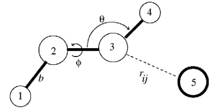
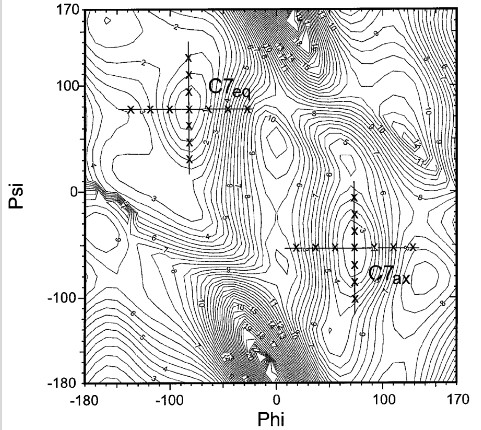
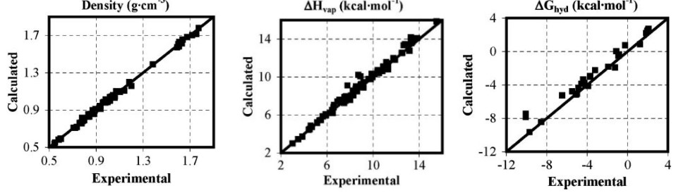
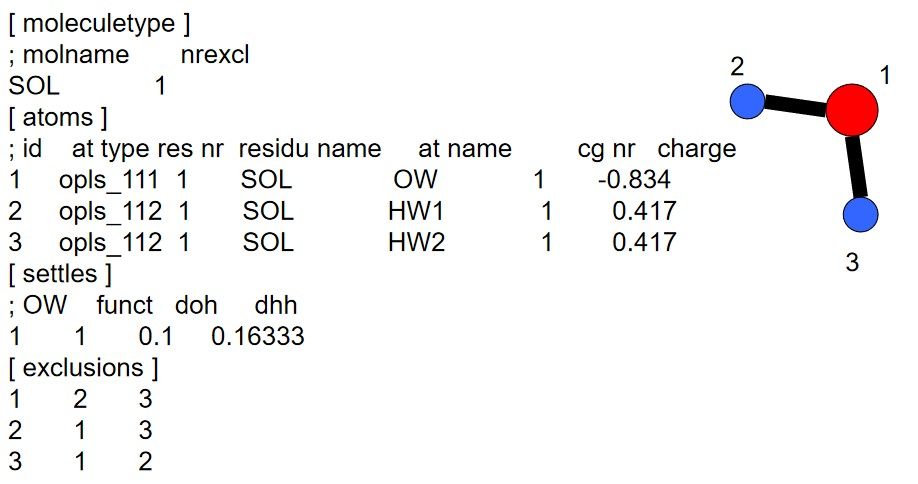
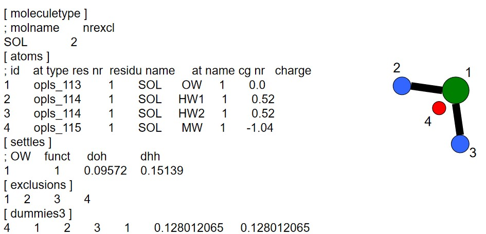
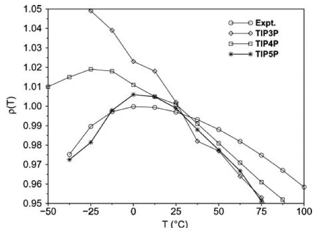
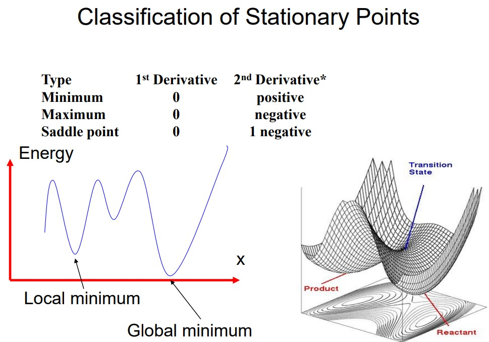
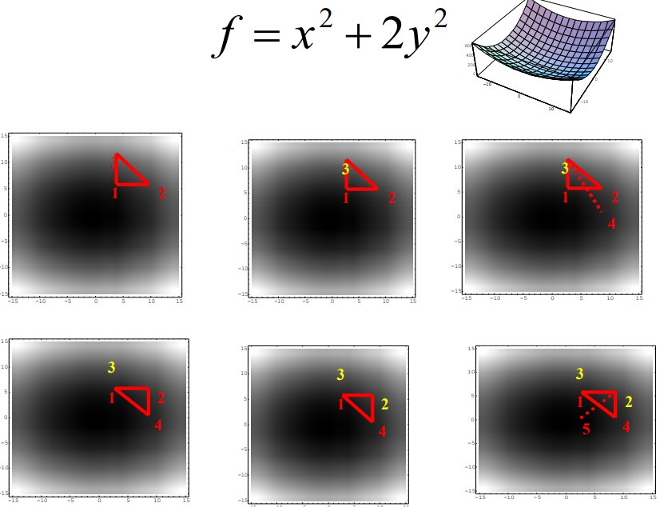
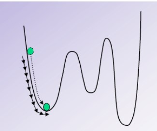
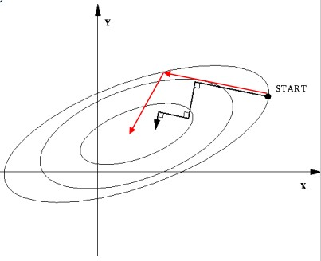

5 Realization of Force Field and Energy Minimalization
The potential energy \(V(r)\) for any force field is:
\[\begin{align} V(r) &= \sum_{\text{bonds}}k_b(b - b_0)^2 + \sum_{\text{angles}}k_\theta(\theta-\theta_0)^2 + \sum_{\text{torsions}}k_\phi[\cos(n\phi + \delta) + 1] \\ &+ \sum_{\text{nonbonded pairs}}\left[\frac{q_iq_j}{r_{ij}} + \frac{A_{ij}}{r_{ij}^{12}} - \frac{C_{ij}}{r_{ij}^6}\right] \end{align}\]
This lecture covers different kinds of force fields.
5.1 Types of Force Fields
BS3008 covers three kinds:
5.1.1 AMBER Force Fields
These were developed by the Kollman Group at the University of California, San Francisco from the early 1980s until now.
The charges in this force field were derived from quantum chemistry calculations at the Hartree-Fock STO-3G level via fitting of partial atomic charges to the quantum electrostatic potential. These forces are called ESP (i.e., Electrostatic potential) charges.
The van der Waals terms were adopted from amide crystal data from a research group (i.e., Lifson) and from liquid-state simulations by another research group (i.e., Jorgensen).
Force constants and idealized bond lengths and angles were taken from crystal structures and adapted to match normal frequencies for a number of peptide fragments.
Torsion force constants were adjusted to match torsional barriers from experiment or from quantum chemistry calculations.
The values in an AMBER force field are closely coupled to non-bonded potentials and are hardly transferrable from one force field to another.
5.1.2 OPLS Force Fields
OPLS is short for Optimized Potential for Liquid Simulation. OPLS force fields were developed by Jorgensen and co-workers at Yale university to simulate liquid-state properties for water and more than 40 organic liquids.
OPLS force fields placed a strong emphasis on deriving non-bonded interactions in comparison to liquid-state thermodynamics. The earliest application of an OPLS force field was to that of rigid-molecule Monte Carlo simulations of the structure and thermodynamics of hydrofluoric acid (i.e., liquid HF).
5.1.2.1 Change in OPLS Performance

In 2001, the OPLS-AA performance for peptides was refitted by key Fourier torsional coefficients.
This technique uses experimental data as its target to choose a suitable subspace of the whole potential energy surface and to determine weights for each of the fitting points based on gradients.

The average energy deviation (in root mean squared) from the LMP2/cc- pVTZ(-f)//HF/6-31G** data has been reduced by 40% from 0.81 to 0.47 kcal / mol due to fitting for electrostatically uncharged dipeptides.
5.1.3 CHARMM Force Fields
CHARMM is short for Chemistry at Harvard using Molecular Mechanics; this force field was developed in the early 1980s by the Karplus group. The goal of CHARMM was to obtain a balanced interaction between solute-water and water-water energies when the latter are represented by TIP3P.
For peptides, it was found that peptide-water interactions led to peptide-peptide hydrogen bonds that were larger than HF/6-31G values by a factor of close to 1.6.
Lennard-Jones parameters were then refined to reproduce densities and heats of vaporization of liquids (along with unit cell parameters and sublimation heat for crystals).
Quantum calculations at the HF/6-13G level of hydrogen bond complexes between water and hydrogen bond donors or acceptors of amino acids or fragments.
The above set of calculations involves a series of supermolecular calculations of the model compound (e.g., formamide or a single water molecule).
5.1.3.1 Change in CHARMM Force Fields
In 2004, a new parameter was introduced such that:
\[\begin{equation} V_{\text{cross}} = K_{n, m}(1 + \cos(n\phi + m\psi - \delta_{n, m})) \end{equation}\]
Molecular dynamics simulations of up to seven proteins in their crystalline environments were used to validate force field enhancements.
5.1.4 Applications of Force Fields in Practice
In a non-bonded kind of interaction, the van der Waals parameters are; \(\epsilon\) and \(\sigma\). In a bonded interaction, the van der Waals parameters are:
- An equilibrium bond length \(l_0\) with a force constraint \(k\).
- An equilibrium angle \(\alpha_0\) with a force constraint \(k\)
- Torsional angle terms \(V_i\), \(n_i\), and \(\theta_i\).
In a database (i.e., topological library), atom types, partial charges, and chemical bonding information are included.
5.2 GROMACS Software

GROMACS is short for GROningen MAchine for Chemical Simulation. GROMACS is an inter-group effort between different project groups in the University of Groningen’s chemistry department (located in the Netherlands).

The [settle] section defines the first atom of a water molecule in a water molecule. The H-H and the O-H distances must always be given - this algorithm can also be used for TIP3P and TIP4P.

The above graphs shows computed and experimental results for the density of liquid water versus the temperature at 1 atm.
5.3 Minimization
As the initial structure of an atom is usually taken from a guess (e.g., particle in a box model), there could be unexpected, “bad” contacts between atoms.
If a system has \(N\) atoms, then there are \(3N\) coordinates or \(3N - 6\) internal coordinates - these coordinates all define multi-dimensional PES (i.e., potential energy surface).
A process is needed to find the local minimum of a PES. Minimization is typically performed after model building

Given a function \(\displaystyle f = f(x_1, x_2, x_3, ...)\), we need to find the values of \(x\) such that \(f\) will be a minimum - in other terms:
\[\begin{align} \frac{\partial f}{\partial x_i} &= 0 & \frac{\partial^2 f}{\partial x_i^2} &> 0 \end{align}\]
\(f\) can usually be a function dealing with quantum mechanics energy or molecular mechanics energy, while \(x\) can deal with Cartesian coordinates (in molecular mechanics) or internal coordinates (as is the case with quantum mechanics).
5.3.1 Minimization Methods
5.3.1.1 Simplex Method
A simplex is a geometric figure with \(M + 1\) connected vertices, where \(M\) is the dimensionality of the energy function.

The minima is / are usually found via reflection, reflection-and-expansion, and contraction.
5.3.1.2 Derivative Minimization Methods
A Taylor series can be used to expand a function at a point \(x_0\):
\[\begin{equation} V(x) = v(x_0) + \frac{dV(x)}{dx}(x - x_0) + \frac{d^2V(x)}{dx^2} \cdot \frac{(x - x_0)^2}{2} \end{equation}\]
If \(V(x)\) is a function of \(N\) variables, then \(V'(x_k)\) is the \(N*1\) matrix - hence, \(V''\) should be re-written as \(\displaystyle \frac{\partial^2V}{\partial x_{k1}\partial x_{k2}}\). This matrix is then known as the Hessian matrix or the force constant matrix.
5.3.1.3 First Order Minimization Methods

The steepest descent method moves in the direction parallel to the net force - this is like walking downhill.
\[\begin{align} s_k &= \frac{-g_k}{|g_k|} & g_k &= \frac{\partial V}{\partial x_k} \end{align}\]

The conjugate graidents methods not only considers net force, but also takes the previous move step into consideration.
\[\begin{align} s_k &= -g_{k - 1} + \gamma_ks_{k - 1} & \gamma_k &= \frac{s_{k - 1} \cdot g_{k - 1}}{s^2_{k - 1}} \end{align}\]